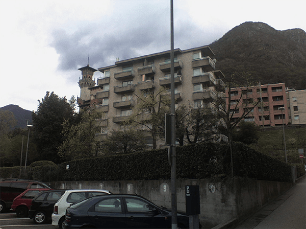
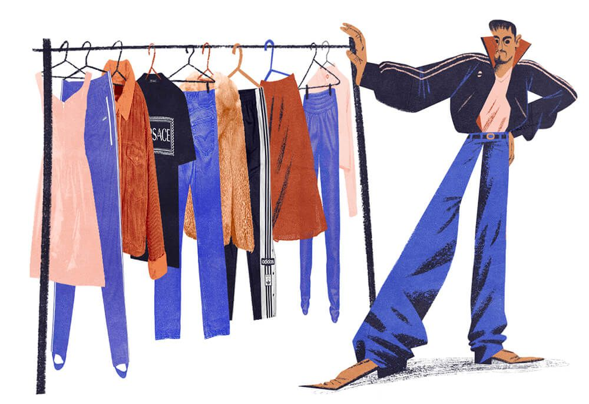
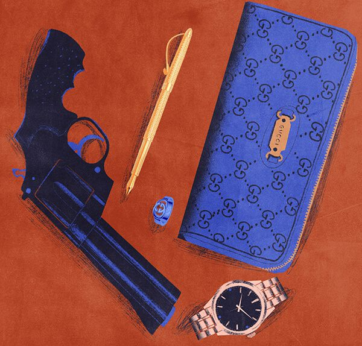
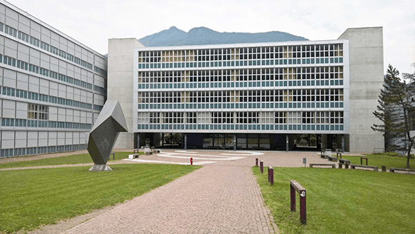
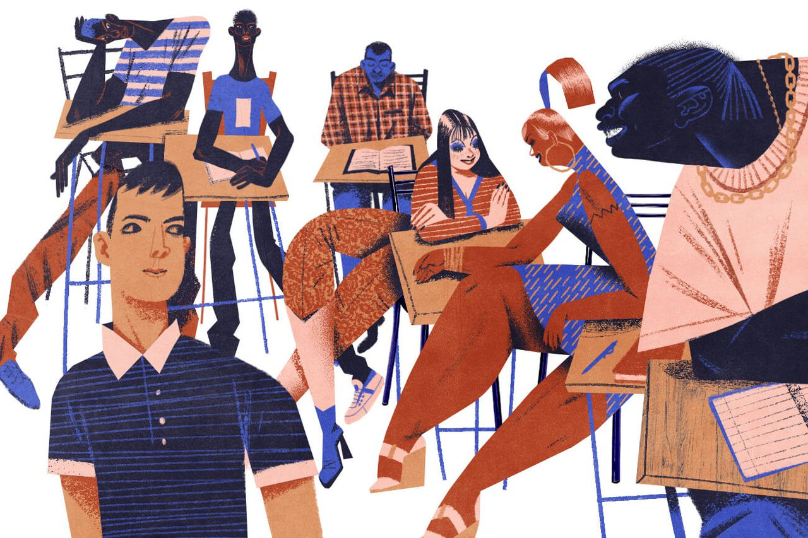
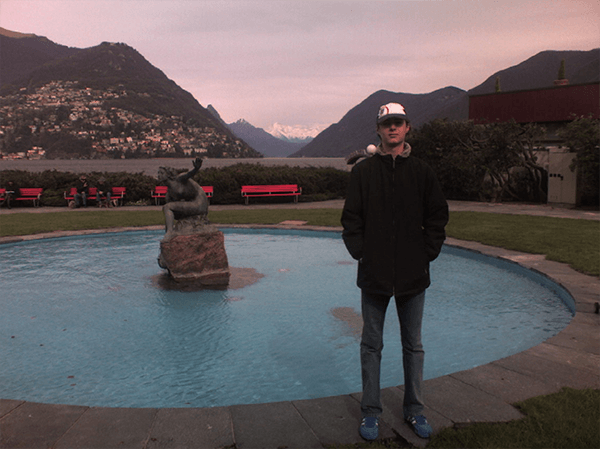
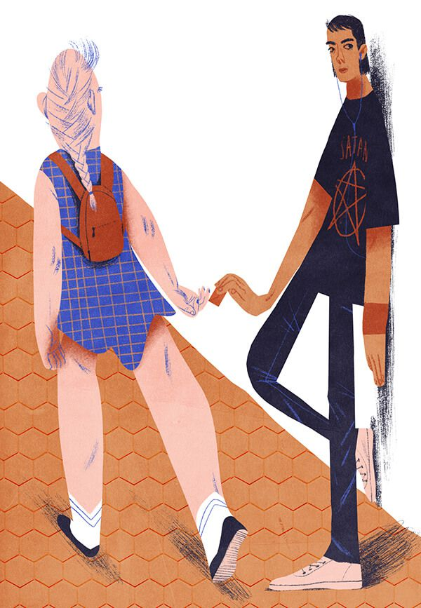
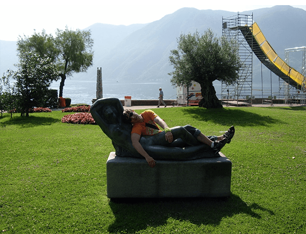
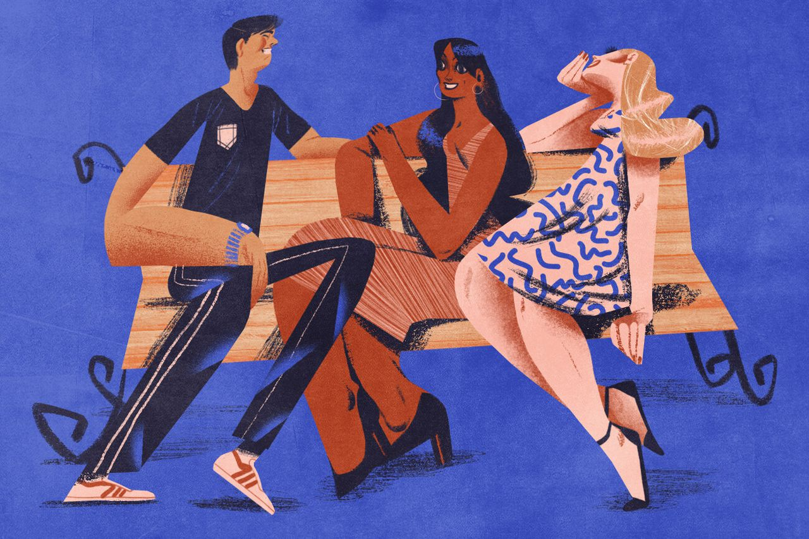
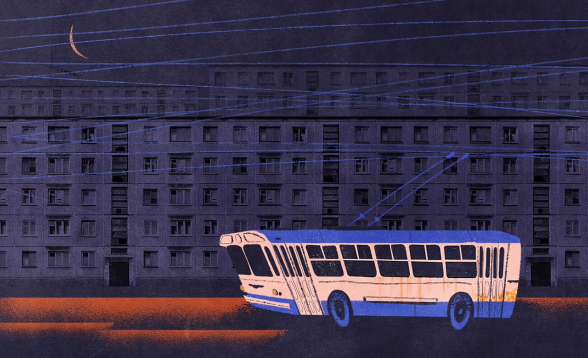

Illustration: Maria Shishova
Illustration: Maria Shishova
Illustration: Maria Shishova
Illustration: Maria Shishova
Нам достались ключи от однокомнатной квартиры-студии в невзрачном семиэтажном здании с двумя подъездами, заселённом исключительно такими же бродягами, как и мы. Дом стоял на возвышенности, вплотную к железнодорожным путям, но наши окна выходили в сторону города: с маленького балкончика открывался чудесный вид на озеро и опоясывающие горы.
Прямо у входа в квартиру стояла электропечь с раковиной и дверь в туалет, где, кроме унитаза, находилась миниатюрная ванная, пригодившаяся нам для замачивания и стирки вещей.
В просторной светлой комнате по разным углам стояли две
односпальные кровати, два небольших письменных стола и шкаф.
Так выглядело счастье.

Не успели мы разложить вещи, как раздался стук в дверь.
— Rashid, — представился небольшой сухощавый араб. После обмена приветствиями он вежливо, но настойчиво пригласил нас к себе в гости.
Мы спустились на первый этаж и зашли в его каморку: квартира Рашида была вдвое меньше нашей.
Без лишних ритуалов он открыл шкаф и представил нашему взору богатый ассортимент новой ворованной одежды. Там были женские платья, пиджаки Versace, спортивные костюмы лучших брендов и многое другое.
— Фифти. Сёрти. Хандрэд, — называл Рашид стоимость вещей, к которым мы притрагивались.
Ценовая политика формировались очень просто: четверть от магазинной стоимости для обычных брендовых вещей и треть, если речь шла о мире высокой моды.

Illustration: Maria ShishovaНедолго думая, отец выбрал себе чёрный спорткостюм Adidas Classic, а я взял джинсы Levi’s из лимитированной серии, посвящённой какому-то юбилею бренда. Всё это обошлось нам в сущие копейки.
В шкафу у Рашида висело ещё немало интересных позиций, но отец решил не торопить коней:
— Мы и сами можем эти вещи себе бомбить, — сказал он назидательно, когда мы вернулись к себе.
Всё чаще к нам в гости стали захаживать грузины. Кто-то просил подержать у себя несколько дней золотую ручку Parker, кто-то — пару вещей из новой коллекции Gucci, а кто-то — револьвер, потому что переехавший в одну из соседних квартир Гоча часто напивался и мог в припадке ярости ненароком застрелить соседей. Постепенно наше жилище превратилось в склад ворованной продукции.
Дело в том, что в случае поимки с поличным полиция шла с обыском в квартиру разбойника, и в качестве страховки от такого сценария все сокровища хранили у нас. За предоставляемые услуги мы получали от грузин бонусы и неприличные скидки на всю линейку продукции: однажды отец приобрёл за 400 франков новые швейцарские часы стоимостью более трёх тысяч. Он собирался отдать их в Донецке человеку, у которого занимал деньги на поездку в Барселону.

Illustration: Maria ShishovaЭто покупка стала поворотной точкой нашего путешествия и означала, что с домашними долгами было, наконец, покончено. Началась эра накопления капитала.
Спустя неделю пребывания в Раю к нам в гости наведалась сотрудница социальной службы и объявила, что со следующего понедельника я обязан ходить на занятия в швейцарскую школу — в специальный класс для иностранцев с упором на изучение итальянского языка.
Каждое утро с понедельника по пятницу на остановке в трёхстах метрах от дома меня забирал школьный автобус и вёз на занятия по красивому горному серпантину.
Школа занимала большую территорию и состояла из нескольких пятиэтажных корпусов с прозрачными стеклянными стенами. Она больше походила на училище — я видел там много подростков старше меня. У нас были мастерские с разрезанными на две части автомобилями и даже отдельное здание-кухня, где раз в неделю проходили занятия по кулинарии.

Мой класс состоял из ребят всех возрастов и национальностей: за соседними партами сидели совершеннолетние красотки из Сербии и Португалии; приударяющие за ними чернокожие детины из Гаити — я называл их Кенан и Кел из-за внешнего сходства и такого же «рэперского» стиля одежды; худые сомалийцы с торчащими кадыками и много тех, чью национальность я не мог определить на глаз.
Почти все они вызывали у меня лёгкое отвращение, кроме тридцатилетнего нигерийца Феликса: он не обезьянничал, как прочие, не носил широких, спущенных до колен штанов и не строил из себя гангстера. Мы всегда сидели рядом и иногда перекидывались фразами на ломаном английском.
В этом интернациональном супе я был самым младшим из учеников.
Наша школьная программа состояла из арифметики, английского, итальянского, информатики и кулинарии: раз в неделю мы ходили в огромную, отлично оборудованную кухню и под присмотром шеф-повара готовили разные вкусности. Это было моим любимым занятием, потому что я всегда с удовольствием съедал практически всё, что мы успевали приготовить в течение урока. Шеф-повар и одноклассники чуть ли не хлопали в ладоши, когда я поглощал очередную порцию десерта: никто не мог понять, как в такого худого юношу влезает столько еды.
Остальные уроки были похожи на тесты из фильма «Идиократия»: я решал все примитивные задания за десять минут и до конца урока наблюдал, как соседи по партам потеют над ответами. Школьная программа была рассчитана на выходцев из стран, чьи граждане даже не знали таблицы умножения.

Illustration: Maria ShishovaТа же женщина, что отправила меня учиться в школу, предложила отцу работу садовником в местном парке. Всё, что ему нужно было делать, — это косить газоны и следить за деревьями по четыре часа в день, за что ему полагалась небольшая надбавка к пособию для беженцев. Отец согласился.
Там он познакомился с Фабио — местным пройдохой, сидящим на пособии по безработице. Несколько месяцев в году Фабио был обязан искупать государственные подачки на непыльных социальных работах.
После службы отец захаживал к нему в гости, принимал на грудь и практиковал итальянский.
Однажды вечером он вернулся домой под градусом и протянул мне какую-то твёрдую коричневую плитку, похожую на шоколад. Я принюхался и вопросительно посмотрел в ответ.
— Гашиш, — пояснил родитель, выговаривая «Г»
и «Ш» с таким трудом, как будто русский язык стал для
него иностранным.
— И что мне с ним
делать?
— А сейчас я тебе объясню…
Он достал из кармана красный швейцарский нож, который уже успел стащить из какого-то супермаркета, и с серьёзностью нейрохирурга отрезал квадратик размером с ноготь.
— Вот такой кусочек продаём за десять франков. Фабио
отдаём половину. Он из Милана привозит: на мопеде
гоняет раз в месяц, тут семьдесят километров до того
Милана.
— А продавать кому?
— Всем,
сына, всем. Весь город пыхает, ты ещё не заметил?
— Заметил…
У нас в школе на переменах даже преподы курят.
— Ну,
а я тебе о чём? Лишняя копейка не помешает.
С появлением работы и друга Фабио отец несколько подобрел, перестал читать мне проповеди о великом футбольном будущем и ездить со мной на тренировки.
Гнёт тирании спал, и я, наконец, был предоставлен самому себе. Чувство долга не позволяло мне пропускать занятия, но теперь я играл ещё безалабернее и с нетерпением ждал летних каникул.
До стадиона я добирался на автобусе. Мне нравилась железная точность, с которой здесь работал общественный транспорт. Всегда можно быть уверенным, что автобус подъедет точно в минуту, указанную на стенде у остановки.
Но какое-то проклятие преследовало меня с самой Барселоны — ко мне снова прицепился педофил: бледный мужчина за сорок, с заискивающей улыбкой на изъеденном шрамами лице, испелял меня взглядом по пути на тренировку. Он вычислил мой распорядок и катался в автобусе по понедельникам, средам и пятницам, при возможности присаживаясь поближе ко мне.
Из-за этого жуткого идиота мне пришлось ходить на тренировки пешком или приезжать на стадион раньше времени.
От скуки и одиночества я начал развлекать себя мелким воровством, поэтому стащить фисташки или шоколадный батончик стало для меня ежедневной рутиной.
Однажды, переодеваясь после тренировки, я заметил у одного из ребят стильный спортивный кошелёк и тут же решил, что хочу такой же.
Недолго думая, я отправился на дело в торговый центр, расположенный в самом сердце Лугано. До этого момента я только единожды воровал вещи с отцом: мы просто зашли в магазин, переобулись, сложили свои старые ботинки в коробки на место новых и пошли домой.
Из общения с грузинами я успел почерпнуть некоторую теоретическую базу: на выходе из магазинов стоят специальные «ворота», которые поднимают шум, если с вещи не снят «маяк». Маяки же бывают двух типов: большие, очевидные пластиковые брелоки, привязанные к вещам стальным прутом, и магнитные наклейки, которые продавцы прячут под стелькой или в других потаённых местах.
Для обезвреживания брелока нужен довольно мощный магнит или сумка, обмотанная внутри толстым слоем фольги. Если положить товар с маяком в такую сумку, то тревожный сигнал на «воротах» не сработает.
Наклейку же достаточно найти, оторвать и оставить в магазине.
Я поднялся на четвёртый этаж здания в спортивный отдел. Решив, что «ворота» здесь располагаются не в каждом магазине, а только на центральном входе, я придумал взять кошелёк и в кабинке туалета осмотреть его на наличие маяков.
Побродив некоторые время по магазину, я присмотрел чёрный кошелёк Puma с гербом национальной команды Швейцарии. Улучив подходящий момент, я положил его в карман, вышел из магазина и спустился на этаж ниже в мужскую уборную.
От переизбытка адреналина я с трудом дышал. Фисташки в маленьком супермаркете — это одно, а вещь в огромном торговом центре, кишащем людьми, камерами и охраной, — совсем другое дело. Копошась во внутренностях пустого кошелька, я уже был не рад, что ввязался в эту авантюру, и даже подумывал бросить его в урну с использованной туалетной бумагой.
За двадцать минут тщательного изучения бумажника я так и не смог найти ничего похожего на маяк.
Я обречённо спустился на первый этаж и направился к выходу.
Задержав дыхание, я прошёл через ворота, жадно вдохнул свежий мартовский воздух и быстро зашагал домой.
Спустя какое-то время до меня дошло, что при наличии маяка в кошельке я бы погорел гораздо раньше: такие же ворота стояли перед каждым эскалатором и зазвенели бы ещё тогда, когда я спускался на третий этаж в мужской туалет.
В тот вечер я решил, что больше не буду испытывать судьбу ради таких безделушек, но чувство удовлетворения не покидало меня ещё несколько дней.
С наступлением пятнадцатилетия мое тело запустило активную стадию полового созревания: я начал стремительно тянуться ввысь, обрастать волосяным покровом и по-новому, с жаждой смотреть на женщин.

К великому прискорбию, я не имел ни малейшего представления о том, как эту жажду хотя бы частично утолять. Мой нигилистический взгляд на природу бытия достиг апогея.
Я отпустил волосы, целыми днями слушал диски с сатанинским металлом, которые мне любезно прислала подруга Рената, и, поднатаскавшись в итальянском, дерзил учителям в школе. На уроках информатики я подключался к принтеру и распечатывал фотографии обнажённых женщин, на уроках итальянского обвинял европейцев в двуличии, а на уроках арифметики мог поймать момент, когда учительница смотрит в другую сторону, вылезти в окно и уехать на первом попавшемся автобусе домой.
Кроме того, на переменах я приторговывал гашишем и ворованными вещами, накидывая 50 процентов к грузинскому ценнику. Примерочной служили кабинки мужского туалета.
Однажды классный руководитель вызвала моего отца на разговор и пожаловалась на неподобающее поведение сына. К счастью, она не знала о моей незаконной деятельности — её больше беспокоили моя дерзость и прогулы. Отец притворился виноватым и пообещал провести со мной воспитательную беседу, но когда я рассказал ему про свои грехи, просто хохотнул и снисходительно махнул рукой.
В июне я без труда сдал примитивные экзамены и получил диплом выпускника, который можно было смело приравнять к диплому швейцарского третьеклассника.

Illustration: Maria ShishovaНаша квартира превратилась в Областной Центр Грузинских Воров при кантоне Тичино. Шкаф и полки столов уже ломились от товаров: в один момент, помимо горы одежды и обуви, у нас хранилось около тридцати новых мобильных телефонов, с десяток цифровых камер, несколько золотых часов и ручек Parker.
Гоча мог в любое время наведаться в гости со свежими эмигрантами, и в то время, пока он рассказывал нам очередную историю про подрезанный в автобусе кошелёк, его товарищи доставали из раковины грязную чайную ложку и закрывались в ванной, чтобы пустить по вене героин.
Однажды отец обмолвился, что мы тоже воруем еду из ближайшего супермаркета. Это привело грузинскую коллегию в шок:
— Серега, нахуя вы это делаете?!
— В смысле?
А жрать нам что?
— Так сказал бы нам!
А если тебя повяжут и сюда приведут?!
Ты об этом думал?!
— Каждый раз вас просить,
что ли…
— И-и-д-д-ём прямо сей-час. Затарим вас
на неделю. Возьмёшь всё что хочешь. Никогда больше
не воруйте сами! Ты что?!
Я, отец, и ещё двое грузинских удальцов направились в находившийся неподалёку супермаркет. Мне было велено ждать у входа на улице, отец же с ребятами захватили две тележки на колёсах и пошли по рядам.
Мне доводилось видеть и прежде, как работали грузины: они парили по магазинам, словно призраки в костюмах-невидимках. Никто не обращал на них внимания. Но когда через прозрачную витрину магазина я увидел, как Гоча и его товарищ, не сбавляя скорости, просто прошли мимо кассиров с набитыми тележками, даже не купив ничего не «отбивку», у меня отвисла челюсть:
— Вы какие-то заклинания знаете? — спросил
я ребят, перекладывая креветки и прочие деликатесы
из тележек в пакеты.
— Биджё, мы этой
хуйнёй всю жизнь занимаемся! Они тут все спят, понимаешь?
Однажды я вернулся домой из библиотеки и обнаружил на своей постели чёрный ноутбук HP. Затаив дыхание, я включил аппарат и обнаружил, что для доступа к Windows требуется пароль.
Отец купил запароленный ноутбук. «Отличное решение, батя!» — со злостью подумал я про себя.
В это время он должен был находиться дома, поэтому, взяв ноутбук под мышку, я пошёл на разведку по грузинским соседям — и обнаружил отца распивающим водку на кухне у Гочи.
— Он же на пароле! — выпалил
я с порога.
— Ну и что?
— примирительно ответил подвыпивший отец. — Мой сына
не взломает пароль?
— Как?! Там вариантов может
быть миллион. Это винду надо переустанавливать.
— Ну,
значит, переустановишь свою винду. Ноут хороший, Гоча из-за
этого пароля его за три копейки отдал.
— Ну винду
мне Рената, может, отправит. А драйвера я где
возьму?
— Р-р-р-омчик, — затянул возбуждённый
Гоча, — сходи в магазин посмотри: ноут — заебись!
Лучший.
— Ладно… — я обречённо махнул рукой
и побрёл назад.
Усевшись на кровать, я закусил губу и принялся подбирать пароли: switzerland, Switzerland, Svizzera, Ticino, ticino, ticino-lugano, Lugano, Lugano2005… Это было похоже на лотерею, где, понятное дело, вероятность джекпота всегда стремится к нулю.
Когда пьяненький отец вернулся в домой, я уже вовсю рубился в «Сапёра». Он взглянул на экран и радостно потрепал меня в голове:
— Ну, взломал?! А то сразу
«он на пароооле, он на пароооле»…
— Да повезло
просто. По имени аккаунта и дате рождения подобрал,
Francesco1975. Хозяин — дебил.
— Да и хрен
с тем хозяином, — он смачно зевнул и прилёг
на кровать. — Пойдёшь завтра в библиотеку —
скачай мне преферанс, раскатаю пару пулек.
Наконец, на связь вышел Дима. Всю весну он прожил в похожих бараках в пригороде Берна — столицы Швейцарии и теперь собирался наведаться в гости.
Мы с отцом любили Диму и искренне обрадовались встрече со старым товарищем по несчастью. Он осмотрел наши воровские сокровища, и его взгляд пал на плитку гашиша.
— Можно попробовать? — улыбаясь, спросил Дима.
— Да ради
бога! — ответил отец без раздумий.
Дима со знанием дела смешал небольшую порцию с табаком, скрутил папиросу и вышел на балкон.
А хорошо тут у вас!
— Да,
видок — бомба, — подтвердил отец.
— А у тебя там что?
— Да хуйня
полная, если честно. Катакомбы какие-то. Я с немкой
местной познакомился — у неё ночую иногда. Но она
встречается с местным, поэтому редко получается. Заебался
уже, если честно. Думаю домой ехать.
— Потерпи уже,
скоро должны переселить.
— Неизвестно. Некоторые там
и по полгода сидят.
Мы долго общались, обмениваясь интересными байками из беженского фольклора. Отец приготовил нам обед, мы поели и отправились гулять по городу вдвоём: родитель проявил деликатность и дал нам возможность провести время на своей волне.
Летом Лугано стал ещё прекраснее. У Димы был неплохой цифровой фотоаппарат — каждые пять минут я щёлкал его возле какой-то статуи или красивой клумбы.

Купив упаковку из шести банок пива, мы уселись на набережной перед озером. Было хорошо: Дима пил и скручивал папиросы, мне же было достаточно компании весёлого товарища. По какой-то неведомой причине за всё время пребывания в Швейцарии меня никогда не тянуло ни к алкоголю, ни к наркотикам, хотя они постоянно находились у меня прямо под носом.
Мы паясничали и пели какие-то дурацкие песни «ВИА Гры». Проходящие мимо швейцарцы смотрели на нас без осуждения и даже приветливо улыбались. Я надолго запомнил это ощущение комфорта, которого не знал ни до, ни после Лугано.
Через пару часов за соседнюю лавку присели две обворожительные девушки. Я мельком взглянул в их сторону:
— Это наши.
— В смысле? — спросил
Дима.
— Ну, русские. Или украинки.
— Откуда
ты знаешь?
— Просто знаю.
Я их за километр вижу. Тут же
в стрип-клубах много наших работает, мне один местный
мафиози рассказывал. Они ему DVD-фильмы на русском
привозят.
— Пойдём познакомимся?
Такого поворота я не ожидал. На тот момент мои познания о межполовых отношениях были настолько смехотворны, что мне даже думать об этом было неловко.

Illustration: Maria ShishovaДима направился к девчонкам, а я испуганно остановился в десяти метрах за его спиной. Там живо завязался разговор на русском. Я оказался прав.
— Ромчик, иди к нам, — весело позвал Дима.
Дима расспрашивал девушек о каких-то пустяках, а у меня кружилась голова от близости к таким красоткам: они выглядели как модели из Playboy.
— Девчонки из Киева. Я им говорю, что
ты сразу определил.
— Как ты понял?
— с заигрывающим любопытством спросила брюнетка.
— Да что
тут понимать… Местные такими красивыми не бывают, —
ответил я искренне.
Несмотря на их модельную внешность, девушки вели себя просто и непринуждённо. Я быстро расслабился, забыв, что лишь неделю назад впервые сбрил свои девственные усы. Дима угостил их пивом и папиросами, они попросили проводить их домой. Мы шли по набережной вдоль озера, взяв дам по-старомодному под локоть.
Дима обменялся с девушками номерами — и мы в отличном настроении вернулись домой. В комнате не было лишнего спального места, поэтому тем же вечером он уехал обратно в Берн, прихватив в дорогу ещё один кусочек дармового гашиша.
В июле мне уже не нужно было ходить ни в школу, ни на тренировки, я днями напролёт пялился в экран ноутбука, потому что получил диск с «Героями Меча и Магии» от Ренаты.
Тем утром отец работал в парке. Кто-то постучал, я недовольно прервал игру, открыл дверь — и увидел на пороге молдаванина Колю. Тот тянул мне горсть мелочи.
— Дай один кубик, пожалуйста.
Торопливо отрезав кусочек гашиша, я, не пересчитывая мелочь, отдал его клиенту, закрыл дверь и вернулся к «Героям».
Через пятнадцать минут постучали снова. На пороге стоял какой-то неизвестный грузин, по-наркомански почёсывал бока и пытался заглянуть внутрь.
— Братан, твоему отцу машинка нужна?
Отец давно стриг голову электробритвой, которую захватил ещё с Донецка. Буквально несколько дней назад она сломалась, и, учитывая наше тесное общение с грузинским комьюнити, я не удивился такому вопросу.
— Нужна.
— Братан, в машине лежит
у пацанов, во дворе, ахуенная, Phillips. Полтинник
дай — и я тебе сейчас принесу. Там человек без
денег не даёт. Ну, такой тип! — добавил он,
посмеиваясь. — Отвечаю, две минуты —
и я вернусь.
Не успев ничего обдумать, я, как во сне, отдал незнакомцу деньги и вернулся к своему ноутбуку.
Больше этого продавца я не видел.
Когда отец узнал о моей оплошности, он целый час отчитывал меня с такой ненавистью, как будто я пустил под хвост всю его жизнь. Моё улучшающееся за последний месяц настроение безвозвратно смыло волной его истерики.
Все злоключения, происходившие с нами за последний год, всплыли на поверхность и встали комом поперёк горла. Я отчаянно захотел домой и твёрдо решил, что если до конца лета мы не вернёмся в Донецк, то я закончу свою жизнь на дне озера Лугано.
Несколько дней мы практически не разговаривали. Он злился на мою непростительную глупость, а я — на его непростительную злость.
Потом кто-то из грузин продал ему бюджетные швейцарские часы, но в них не было батарейки. Отец сходил в наш супермаркет, но нужных не нашёл.
— Я видел такие в одном хозяйственном магазине
возле стадиона, — он достал карту и сделал метку.
— Дуй сюда, всё равно без дела маешься.
— Прямо
сейчас?
— А у тебя есть занятия поважнее?
— По его мнению, я должен был искупать подаренные
жулику пятьдесят франков кровью.
Натянув наушники и сделав музыку в плеере погромче, я поплёлся в магазин. Эра взаимного уважения закончилась в тот день, когда я уволился с фабрики. Золотые были времена! Мне хотелось утопиться только ради того, чтобы донести отцу одну простую мысль: пятьдесят франков — это не повод унижать родного сына.
Моё сердце ускорило пульс задолго до того, как я зашёл в магазин. Плохое предчувствие: я давно не практиковал воровство, и самое главное — я не мог найти эти проклятые батарейки.
В пустом магазине снующий двадцать минут подросток выглядел подозрительно. Я не мог уйти без батареек, ведь это грозило мне очередной родительской истерикой.
В конце концов меня начала преследовать сотрудница магазина. Мне пришлось спросить её на ломаном итальянском о месторасположении необходимого товара. Она с подозрением указала на батарейки, не переставая следить за моими манипуляциями. Я улучил момент, чтобы спрятать их в карман, и пришёл на кассу с каким-то скотчем за пятьдесят центов.
На выходе из магазина меня уже поджидала та самая сотрудница.
Проводив меня в своей кабинет, она пыталась дозвониться по номеру, указанному в моём удостоверении беженца. Эта пластиковая карточка не отображала актуальную информацию: там был адрес и телефон дежурной бараков, из которых мы переехали почти полгода назад.
По воле случая дежурная куда-то отлучилась, и после нескольких неудачных попыток дозвониться недовольная женщина махнула рукой и отпустила меня на свободу.
Вернувшись домой, я собрал всё отчаяние в кулак и заявил отцу, что хочу вернуться домой. Он сидел за письменным столом спиной ко мне, подперев подбородок левой рукой, и играл в преферанс с компьютером.
Успешно разыграв мизер, он отхлебнул маленький глоток Jim Beam и, театрально причмокивая, пересел на кровать.
— Батарейки нашёл?
— Нашёл. Меня поймали.
Он недовольно отвернулся.
— А с футболом — что? Всё?
Отец знал, что у меня не хватит духу пойти поперёк его футбольной одержимости. Наверное, тот же вопрос задавали инквизиторы перед казнью, только вместо футбола вставляли слово «Бог».
— Ну, в Донецке буду тренироваться, — ответил
я с наигранной уверенностью. — Ты видел этот
Лугано? Чи ни клуб!
— На крайняк
вернёшься в «Металлург»… — неожиданно начал отец.
У меня появилась надежда. Похоже, что ему тоже осточертела жизнь в Paradiso.
— Но я бы всё-таки тут остался. Ты ещё
подумай. Вернёшься в Донецк — пожалеешь. Ты уже
забыл, какой там мрак.
— Да надоело мне всё,
понимаешь? — я не сдержался и начал плакать.
— Домой хочу…
Отец встал с кровати и прошёлся по комнате.
— Ладно. С долгами мы рассчитаемся. Ещё
и в плюс выйдем. — Он вытащил
из тайника пачку франков и, шевеля губами, пересчитал
купюры. — С таким настроем ты тут всё равно
играть не сможешь.
Я облегчённо вытер мокрые глаза рукавом. Отец сделал паузу,
приложился к горлышку и продолжил:
— У меня есть выходы на мариупольский «Ильичёвец». Можно будет продать тебя в дубль тысяч за десять баксов…
Однажды, стоя на балконе, я увидел Рашида: он неспешно возвращался домой, потягивая пиво из банки.
Неделю назад его в наручниках выводили из подъезда полицейские.
Видя беспечное лицо этого жулика, чья квартира, как и наша, была под завязку забита ворованными вещами, я почувствовал обиду за Швейцарию: я не мог понять, зачем такая восхитительная страна терпит у себя всех этих людей?
Кроме того, каждому беженцу, добровольно решившему покинуть страну, швейцарское правительство выделяло около семисот долларов и оплачивало перелёт домой.
Напоследок отец решил наведаться в соседний городок Беллинцона. Ходили слухи, что в местном торговом центре не было ни камер, ни охранников, ни маячков.
Мы зашли туда в лохмотьях из секонд-хенда, который намеренно посетили за день до поездки, а затем, вальяжно расхаживая по магазинам, полностью переоделись в новые брендовые вещи, оставляя лохмотья в примерочных. Сперва украв по рюкзаку, мы набили их до упора новой обувью, не забыв и про женские кроссовки для мамы и сестры.
Вернувшись домой, отец со спортивным интересом суммировал все ценники: общая стоимость наворованной одежды составляла почти две тысячи франков.
Так мы отблагодарили страну, подарившую нам бесплатный кров и пускай скромные, но безвозмездные средства для существования.
Но всё это я осознал гораздо позже. В тот момент мой юный разум одурманивала эйфория от успешно провёрнутого дела.
Мы прилетели в Донецк глубокой ночью, нас встретил близкий друг отца Семёнов и повёз на своём автомобиле домой.
По дороге из аэропорта я увидел одиноко стоящий у обочины троллейбус: старую, изъеденную ржавыми язвами коробку.
Пока мы с отцом искали счастья в Европе, мать с сестрой выселили из облупленной съёмной сталинки, в которой мы жили до отъезда, и им пришлось переехать в другую квартиру.
Промчавшись по пустым дорогам ночного Донецка, мы подъехали к нашему новому дому — невзрачной панельке в спальном районе города. Вытащив ногу из автомобиля, я сразу же вступил в чёрную лужу и на минуту завис, удивлённо разглядывая грязные кроссовки.
— Ромчик, все окей? — весело спросил Семёнов, доставая
из багажника сумки.
— Да… — пробубнил
я в ответ не своим голосом. За год
в Швейцарии я просто забыл, что такое грязь.

Illustration: Maria ShishovaПри входе в подъезд я стукнулся головой о дверную раму. Поднимаясь в лифте, мы с отцом испуганно поглядывали на пол: края лифта проржавели так сильно, что можно было увидеть движения канатов. Половина кнопок была выжжена, и в кабинке стоял отчётливый запах мочи.
Пригнувшись, чтобы снова не удариться головой, я зашёл в квартиру и увидел тусклую, спёртую желтизну.
В коридоре ждала исхудавшая, встревоженная мать. За прошедшие полтора года я так сильно изменился, что она с трудом меня узнала. Мы неловко обнялись и перекинулись бессмысленными фразами, как плохие актёры, забывшие текст.
Когда на первосентябрьской линейке в школе № 22 появился длинноволосый юноша, разодетый в брендовую одежду последних европейских коллекций, по рядам зашептали: «Он приехал из Швейцарии…»
Первое время я пытался объяснить одноклассникам, какой ценой дался весь этот блеск, но быстро осознал, что никого это особенно не интересует. Для восхищения им не требовалось никакой подводки. Мы были молоды и глупы.
------------------------2017-----------------------